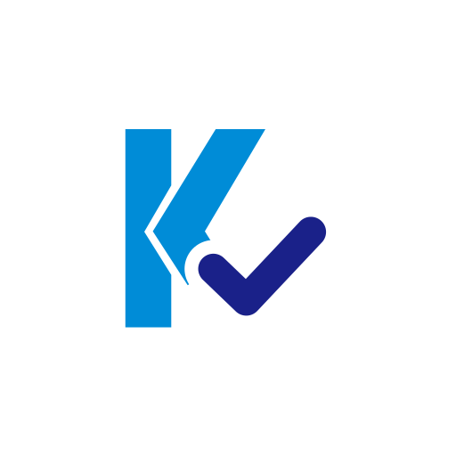
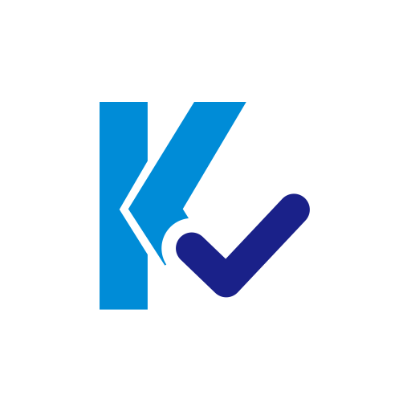

KLIIK JM · Aset logo
Digambar ulang sebagai vektor (SVG) dari logo yang diberikan klien, tanpa mengubah bentuk huruf maupun warna. Ikon K + centang disusun dari huruf K logo yang sama. Untuk persetujuan sebelum dipasang di aplikasi.
Logo lengkap
Utama, untuk latar terang · kliik-jm-logo.svg
Latar gelap · kliik-jm-logo-putih.svg
Tanpa tagline
Untuk header, sidebar, dan tempat sempit: tagline tidak terbaca bila logo kecil.
kliik-jm-wordmark.svg
kliik-jm-wordmark-putih.svg
Satu warna (cetak/stempel) · kliik-jm-wordmark-mono.svg
Putih penuh, di atas foto/warna · kliik-jm-wordmark-mono-putih.svg
Ikon aplikasi
Telepon
Pesan
Kamera
Galeri
Kalender
Jam
KLIIK JM
Catatan
Favicon (tab browser)
Ukuran 16–32 px: latar navy & garis lebih tebal supaya K dan centang tetap terpisah, di tab terang maupun gelap.
KLIIK JM · Beranda
KLIIK JM · Beranda
Ikon Android (maskable) & iPhone
Android memotong ikon menjadi lingkaran/squircle; isi harus di dalam zona aman 80% (garis putus-putus). iPhone membulatkan sudut sendiri.


apple-touch-icon
Warna
Navy #1A2189
Warna utama: teks, tombol, ikon.
Warna utama: teks, tombol, ikon.
Cyan #008CD7
Aksen. Kontras ke putih 3,7:1 — jangan untuk teks kecil.
Aksen. Kontras ke putih 3,7:1 — jangan untuk teks kecil.
Warna status presensi (hijau Hadir, kuning Terlambat, merah Alpa, dst.) tetap seperti sekarang karena bermakna, bukan bagian merek.